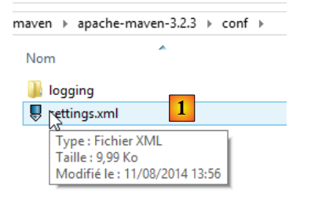
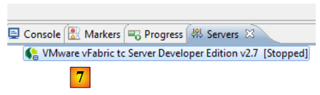
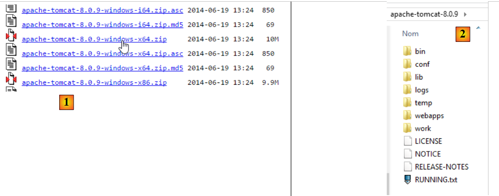
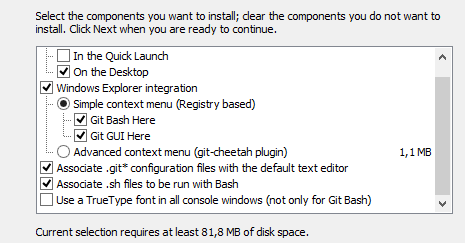
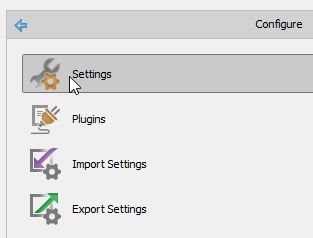
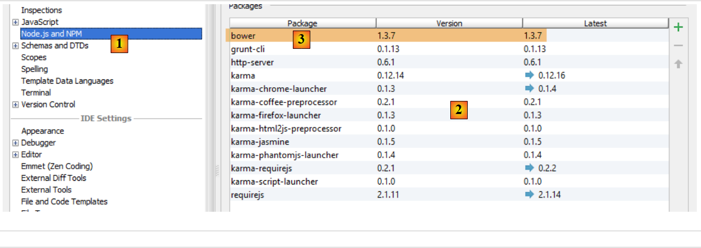
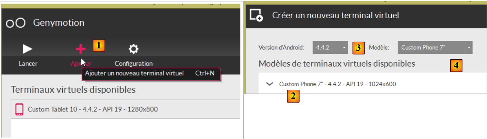

9. Annexes
Nous présentons ici comment installer les outils utilisés dans ce document sur des machines windows 7 ou 8.
9.1. Installation d'un JDK
On trouvera à l'URL [http://www.oracle.com/technetwork/java/javase/downloads/index.html] (octobre 2014), le JDK le plus récent. On nommera par la suite <jdk-install> le dossier d'installation du JDK.
 |
9.2. Installation de Maven
Maven est un outil de gestion des dépendances d'un projet Java et plus encore. Il est disponible à l'URL [http://maven.apache.org/download.cgi].
 |
Téléchargez et dézippez l'archive. Nous appellerons <maven-install> le dossier d'installation de Maven.
 |
- en [1], le fichier [conf / settings.xml] configure Maven ;
On y trouve les lignes suivantes :
<!-- localRepository
| The path to the local repository maven will use to store artifacts.
|
| Default: ${user.home}/.m2/repository
<localRepository>/path/to/local/repo</localRepository>
-->
La valeur par défaut de la ligne 4, si comme moi votre {user.home} a un espace dans son chemin (par exemple [C:\Users\Serge Tahé]), peut poser problème à certains logiciels dont IntellijIDEA. On écrira alors quelque chose comme :
<!-- localRepository
| The path to the local repository maven will use to store artifacts.
|
| Default: ${user.home}/.m2/repository
<localRepository>/path/to/local/repo</localRepository>
-->
<localRepository>D:\Programs\devjava\maven\.m2\repository</localRepository>
et on évitera, ligne 7, un chemin qui contient des espaces.
9.3. Installation de STS (Spring Tool Suite)
Nous allons installer SpringSource Tool Suite [http://www.springsource.com/developer/sts], un Eclipse pré-équipé avec de nombreux plugins liés au framework Spring et également avec une configuration Maven pré-installée.
 |
- aller sur le site de SpringSource Tool Suite (STS) [1], pour télécharger la version courante de STS [2A] [2B],
 |
 |
- le fichier téléchargé est un installateur qui crée l'arborescence de fichiers [3A] [3B]. En [4], on lance l'exécutable,
- en [5], la fenêtre de travail de l'IDE après avoir fermé la fenêtre de bienvenue. En [6], on fait afficher la fenêtre des serveurs d'applications,
 |
- en [7], la fenêtre des serveurs. Un serveur est enregistré. C'est un serveur VMware compatible Tomcat.
Il faut indiquer à STS le dossier d'installation de Maven :
 |
- en [1-2], on configure STS ;
- en [3-4], on ajoute une nouvelle installation Maven ;
 |
- en [5], on désigne le dossier d'installation de Maven ;
- en [6], on termine l'assistant ;
- en [7], on fait de la nouvelle installation Maven, l'installation par défaut ;
 |
- en [8-9], on vérifie le dépôt local de Maven, le dossier où il mettra les dépendances qu'il téléchargera et où STS mettra les artifacts qui seront construits ;
9.4. Installation d'un serveur Tomcat
Les serveurs Tomcat sont disponibles à l'URL [http://tomcat.apache.org/download-80.cgi]. Les exemples de ce document ont été testés avec la version 8.0.9 disponible à l'URL [http://archive.apache.org/dist/tomcat/tomcat-8/v8.0.9/bin/].
 |
On télécharge [1] le zip qui convient au poste de travail. Une fois dézippé on obtient l'arborescence [2]. Ceci fait, on peut ajouter ce serveur aux serveurs de STS :
 |
- en [1-3], on ajoute un nouveau serveur dans STS ; (pour avoir la feneêtre des serveurs faire Window / Show view / Other / Server / Servers) ;
 |
- en [5], choisir un serveur Tomcat 8 ;
- en [6], donner un nom à ce serveur ;
- en [8], indiquer le dossier d'installation du Tomcat téléchargé précédemment ;
- en [9], le nouveau serveur ;
 |
- en [11-12], lancer le serveur Tomcat 8 ;
- en [13-14], sa fenêtre de logs ;
- en [15], pour l'arrêter ;
9.5. Installation de [WampServer]
[WampServer] est un ensemble de logiciels pour développer en PHP / MySQL / Apache sur une machine Windows. Nous l'utiliserons uniquement pour le SGBD MySQL.
 |
- sur le site de [WampServer] [1], choisir la version qui convient [2],
- l'exécutable téléchargé est un installateur. Diverses informations sont demandées au cours de l'installation. Elles ne concernent pas MySQL. On peut donc les ignorer. La fenêtre [3] s'affiche à la fin de l'installation. On lance [WampServer],
 |
- en [4], l'icône de [WampServer] s'installe dans la barre des tâches en bas et à droite de l'écran [4],
- lorsqu'on clique dessus, le menu [5] s'affiche. Il permet de gérer le serveur Apache et le SGBD MySQL. Pour gérer celui-ci, on utiliser l'option [PhpPmyAdmin],
- on obtient alors la fenêtre ci-dessous,

Nous donnerons ici peu de détails sur l'utilisation de [PhpMyAdmin]. Le document donne les informations à connaître lorsque c'est nécessaire.
9.6. Installation du plugin Chrome [Advanced Rest Client]
Dans ce document, on utilise le navigateur Chrome de Google (http://www.google.fr/intl/fr/chrome/browser/ ). On lui ajoutera l'extension [Advanced Rest Client]. On pourra procéder ainsi :
- aller sur le site de [Google Web store] (https://chrome.google.com/webstore) avec le navigateur Chrome ;
- chercher l'application [Advanced Rest Client] :
 |
- l'application est alors disponible au téléchargement :
 |
- pour l'obtenir, il vous faudra créer un compte Google. [Google Web Store] demande ensuite confirmation [1] :
 |
- en [2], l'extension ajoutée est disponible dans l'option [Applications] [3]. Cette option est affichée sur chaque nouvel onglet que vous créez (CTRL-T) dans le navigateur.
9.7. Gestion du jSON en Java
De façon transparente pour le développeur le framework [Spring MVC] utilise la bibliothèque jSON [Jackson]. Pour illustrer ce qu'est le jSON (JavaScript Object Notation), nous présentons ici un programme qui sérialise des objets en jSON et fait l'inverse en désérialisant les chaînes jSON produites pour recréer les objets initiaux.
La bibliothèque 'Jackson' permet de construire :
- la chaîne jSON d'un objet : new ObjectMapper().writeValueAsString(object) ;
- un objet à partir d'un chaîne jSON : new ObjectMapper().readValue(jsonString, Object.class).
Les deux méthodes sont susceptibles de lancer une IOException. Voici un exemple.
 |
Le projet ci-dessus est un projet Maven avec le fichier [pom.xml] suivant ;
<?xml version="1.0" encoding="UTF-8"?>
<project xmlns="http://maven.apache.org/POM/4.0.0"
xmlns:xsi="http://www.w3.org/2001/XMLSchema-instance"
xsi:schemaLocation="http://maven.apache.org/POM/4.0.0 http://maven.apache.org/xsd/maven-4.0.0.xsd">
<modelVersion>4.0.0</modelVersion>
<groupId>istia.st.pam</groupId>
<artifactId>json</artifactId>
<version>1.0-SNAPSHOT</version>
<dependencies>
<dependency>
<groupId>com.fasterxml.jackson.core</groupId>
<artifactId>jackson-databind</artifactId>
<version>2.3.3</version>
</dependency>
</dependencies>
</project>
- lignes 12-16 : la dépendance qui amène la bibliothèque 'Jackson' ;
La classe [Personne] est la suivante :
package istia.st.json;
public class Personne {
// data
private String nom;
private String prenom;
private int age;
// constructeurs
public Personne() {
}
public Personne(String nom, String prénom, int âge) {
this.nom = nom;
this.prenom = prénom;
this.age = âge;
}
// signature
public String toString() {
return String.format("Personne[%s, %s, %d]", nom, prenom, age);
}
// getters et setters
...
}
La classe [Main] est la suivante :
package istia.st.json;
import com.fasterxml.jackson.databind.ObjectMapper;
import java.io.IOException;
import java.util.HashMap;
import java.util.Map;
public class Main {
// l'outil de sérialisation / désérialisation
static ObjectMapper mapper = new ObjectMapper();
public static void main(String[] args) throws IOException {
// création d'une personne
Personne paul = new Personne("Denis", "Paul", 40);
// affichage jSON
String json = mapper.writeValueAsString(paul);
System.out.println("Json=" + json);
// instanciation Personne à partir du Json
Personne p = mapper.readValue(json, Personne.class);
// affichage personne
System.out.println("Personne=" + p);
// un tableau
Personne virginie = new Personne("Radot", "Virginie", 20);
Personne[] personnes = new Personne[]{paul, virginie};
// affichage Json
json = mapper.writeValueAsString(personnes);
System.out.println("Json personnes=" + json);
// dictionnaire
Map<String, Personne> hpersonnes = new HashMap<String, Personne>();
hpersonnes.put("1", paul);
hpersonnes.put("2", virginie);
// affichage Json
json = mapper.writeValueAsString(hpersonnes);
System.out.println("Json hpersonnes=" + json);
}
}
L'exécution de cette classe produit l'affichage écran suivant :
De l'exemple on retiendra :
- l'objet [ObjectMapper] nécessaire aux transformations jSON / Object : ligne 11 ;
- la transformation [Personne] --> jSON : ligne 17 ;
- la transformation jSON --> [Personne] : ligne 20 ;
- l'exception [IOException] lancée par les deux méthodes : ligne 13.
9.8. Installation de [Webstorm]
[WebStorm] (WS) est l'IDE de JetBrains pour développer des applications HTML / CSS / JS. Je l'ai trouvé parfait pour développer des applications Angular. Le site de téléchargement est [http://www.jetbrains.com/webstorm/download/]. C'est un IDE payant mais une version d'évaluation de 30 jours est téléchargeable. Il existe une version personnelle et une version étudiante peu onéreuses.
Pour installer des bibliothèques JS au sein d'une application, WS utilise un outil appelé [bower]. Cet outil est un module de [node.js], un ensemble de bibliothèques JS. Par ailleurs, les bibliothèques JS sont cherchées sur un site Git, nécessitant un client Git sur le poste qui télécharge.
9.8.1. Installation de [node.js]
Le site de téléchargement de [node.js] est [http://nodejs.org/]. Téléchargez l'installateur puis exécutez-le. Il n'y a rien de plus à faire pour le moment.
9.8.2. Installation de l'outil [bower]
L'installation de l'outil [bower] qui va permettre le téléchargement des bibliothèques Javascript peut se faire de différentes façons. Nous allons la faire à partir de la console :
C:\Users\Serge Tahé>npm install -g bower
C:\Users\Serge Tahé\AppData\Roaming\npm\bower -> C:\Users\Serge Tahé\AppData\Roaming\npm\node_modules\bower\bin\bower
bower@1.3.7 C:\Users\Serge Tahé\AppData\Roaming\npm\node_modules\bower
├── stringify-object@0.2.1
├── is-root@0.1.0
├── junk@0.3.0
...
├── insight@0.3.1 (object-assign@0.1.2, async@0.2.10, lodash.debounce@2.4.1, req
uest@2.27.0, configstore@0.2.3, inquirer@0.4.1)
├── mout@0.9.1
└── inquirer@0.5.1 (readline2@0.1.0, mute-stream@0.0.4, through@2.3.4, async@0.8
.0, lodash@2.4.1, cli-color@0.3.2)
- ligne 1 : la commande [node.js] qui installe le module [bower]. Pour que la commande marche, il faut que l'exécutable [npm] soit dans le PATH de la machine (voir paragraphe ci-après) ;
9.8.3. Installation de [Git]
Git est un système de gestion de versions de logiciel. Il existe une version windows appelée [msysgit] et disponible à l'URL [http://msysgit.github.io/]. Nous n'allons pas utiliser [msysgit] pour gérer des versions de notre application mais simplement pour télécharger des bibliothèques JS qui se trouvent sur des sites de type [https://github.com] qui nécessitent un protocole d'accès spécial et qui est fourni par le client [msysgit]
L'assistant d'installation propose différentes étapes dont les suivantes :
 |  |
Pour les autres étapes de l'installation, vous pouvez accepter les valeurs par défaut proposées.
Une fois, l'installation de Git terminée, vérifiez que l'exécutable est dans le PATH de votre machine : [Panneau de configuration / Système et sécurité / Système / Paramètres systèmes avancés] :
 |  |
La variable PATH ressemble à ceci :
D:\Programs\devjava\java\jdk1.7.0\bin;D:\Programs\ActivePerl\Perl64\site\bin;D:\Programs\ActivePerl\Perl64\bin;D:\Programs\sgbd\OracleXE\app\oracle\product\11.2.0\client;D:\Programs\sgbd\OracleXE\app\oracle\product\11.2.0\client\bin;D:\Programs\sgbd\OracleXE\app\oracle\product\11.2.0\server\bin;...;D:\Programs\javascript\node.js\;D:\Programs\utilitaires\Git\cmd
Vérifiez que :
- le chemin du dossier d'installation de [node.js] est bien présent (ici D:\Programs\javascript\node.js) ;
- le chemin de l'excéutable du client Git est bien présent (ici D:\Programs\utilitaires\Git\cmd) ;
9.8.4. Configuration de [Webstorm]
Vérifions maintenant la configuration de [Webstorm]
 |  |
 |
Ci-dessus, sélectionnez l'option [1]. La liste des modules [node.js] déjà installés apparaît en [2]. Cette liste ne devrait contenir que la ligne [3] du module [bower] si vous avez suivi le processus d'installation précédent.
9.9. Installation d'un émulateur pour Android
Les émulateurs fournis avec le SDK d'Android sont lents ce qui décourage de les utiliser. L'entreprise [Genymotion] offre un émulateur beaucoup plus performant. Celui-ci est disponible à l'URL [https://cloud.genymotion.com/page/launchpad/download/]
(février 2014).
Vous aurez à vous enregistrer pour obtenir une version à usage personnel. Téléchargez le produit [Genymotion] avec la machine virtuelle VirtualBox ;

Installez puis lancez [Genymotion]. Téléchargez ensuite une image pour une tablette ou un téléphone :
 |
- en [1], ajoutez un terminal virtuel ;
- en [2], choisissez un ou plusieurs terminaux à installer. Vous pouvez affiner la liste affichée en précisant la version d'Android désirée [3] ainsi que le modèle de terminal [4] ;
 |
- une fois le téléchargement terminé, vous obtenez en [5] la liste des terminaux virtuels dont vous disposez pour tester vos applications Android ;